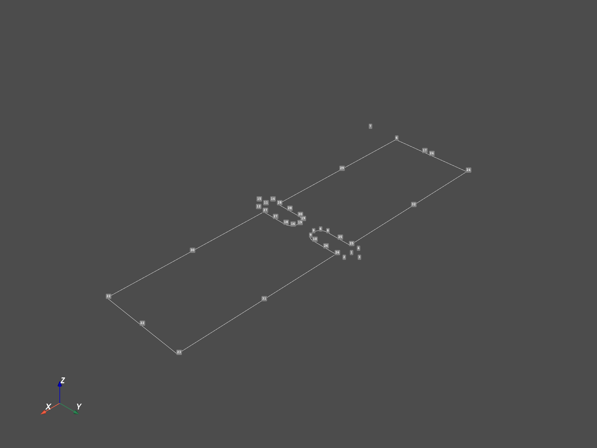

Note
Click here to download the full example code
3D Stress Concentration Analysis for a Notched Plate¶
This tutorial is the 3D corollary to the 2D plane example ANSYS 2D Plane Stress Concentration Analysis, but This example verifies the stress concentration factor \(K-t\) when modeling opposite single notches in a finite width thin plate
First, start MAPDL as a service and disable all but error messages.
# sphinx_gallery_thumbnail_number = 3
import numpy as np
import pyansys
# os.environ['I_MPI_SHM_LMT'] = 'shm' # necessary on Ubuntu without "smp"
mapdl = pyansys.launch_mapdl(override=True, additional_switches='-smp',
loglevel='ERROR')
Geometry¶
Create a rectangular area with two notches at the top and bottom.
length = 0.4
width = 0.1
# ratio = 0.3 # diameter/width
# diameter = width*ratio
# radius = diameter*0.5
notch_depth = 0.04
# notch_radius = 0.002
notch_radius = 0.01
# create the half arcs
mapdl.prep7()
circ0_kp = mapdl.k(x=length/2, y=width + notch_radius)
circ_line_num = mapdl.circle(circ0_kp, notch_radius)
circ_line_num = circ_line_num[2:] # only concerned with the bottom arcs
# create a line and drag the top circle downward
circ0_kp = mapdl.k(x=0, y=0)
k1 = mapdl.k(x=0, y=-notch_depth)
l0 = mapdl.l(circ0_kp, k1)
mapdl.adrag(*circ_line_num, nlp1=l0)
# same thing for the bottom notch (except upwards
circ1_kp = mapdl.k(x=length/2, y=-notch_radius)
circ_line_num = mapdl.circle(circ1_kp, notch_radius)
circ_line_num = circ_line_num[:2] # only concerned with the top arcs
# create a line whereby the top circle will be dragged up
k0 = mapdl.k(x=0, y=0)
k1 = mapdl.k(x=0, y=notch_depth)
l0 = mapdl.l(k0, k1)
mapdl.adrag(*circ_line_num, nlp1=l0)
rect_anum = mapdl.blc4(width=length, height=width)
# Note how pyansys parses the output and returns the area numbers
# created by each command. This can be used to execute a boolean
# operation on these areas to cut the circle out of the rectangle.
# plate_with_hole_anum = mapdl.asba(rect_anum, circ_anum)
cut_area = mapdl.asba(rect_anum, 'ALL') # cut all areas except the plate
# mapdl.aplot(vtk=True, show_line_numbering=True)
mapdl.lsla('S')
mapdl.lplot(vtk=True, show_keypoint_numbering=True)
mapdl.lsel('all')
# plot the area using vtk/pyvista
mapdl.aplot(vtk=True, show_area_numbering=True, show_lines=True, cpos='xy')
# ###############################################################################
# Next, extrude the area to create volume
thickness = 0.01
mapdl.vext(cut_area, dz=thickness)
mapdl.vplot(vtk=True, show_lines=True, show_axes=True,
smooth_shading=True)
- 

Meshing¶
This example will use PLANE183 elements as a thin plate can be modeled with plane elements provided that KEYOPTION 3 is set to 3 and a thickness is provided.
Mesh the plate using a higher density near the hole and a lower
density for the remainder of the plate by setting LESIZE for the
lines nearby the hole and ESIZE for the mesh global size.
Line numbers can be identified through inspection using lplot
# define a PLANE183 element type with thickness
# ensure there are at 25 elements around the hole
notch_esize = np.pi*notch_radius*2/50
plate_esize = 0.01
# increased the density of the mesh at the notch
# line and area numbers identified using aplot
mapdl.asel('S', 'AREA', vmin=1, vmax=1)
mapdl.aplot(vtk=True, show_line_numbering=True)
mapdl.lsel('NONE')
for line in [7, 8, 20, 21]:
mapdl.lsel('A', 'LINE', vmin=line, vmax=line)
mapdl.lesize('ALL', notch_esize, kforc=1)
mapdl.lsel('ALL')
# Decrease the area mesh expansion. This ensures that the mesh
# remains fine nearby the hole
mapdl.mopt('EXPND', 0.7) # default 1
# mesh several elements through the plate
esize = notch_esize*5
if esize > thickness/2:
esize = thickness/2 # minimum of two elements through
mapdl.esize() # this is tough to automate
mapdl.et(1, "SOLID186")
mapdl.vsweep('all')
_ = mapdl.eplot(vtk=True, show_edges=True, show_axes=False, line_width=2,
background='w')


Material Properties and Boundary Conditions¶
Fix the left-hand side of the plate in the X direction and set a force of 1 kN in the positive X direction.
# This example will use SI units.
mapdl.units('SI') # SI - International system (m, kg, s, K).
# Define a material (nominal steel in SI)
mapdl.mp('EX', 1, 210E9) # Elastic moduli in Pa (kg/(m*s**2))
mapdl.mp('DENS', 1, 7800) # Density in kg/m3
mapdl.mp('NUXY', 1, 0.3) # Poisson's Ratio
# Fix the left-hand side.
mapdl.nsel('S', 'LOC', 'X', 0)
mapdl.d('ALL', 'UX')
# Fix a few nodes on the left-hand side of the plate in the Y and Z
# direction. Otherwise, the mesh would be allowed to move in the y
# direction and would be an improperly constrained mesh.
mapdl.nsel('R', 'LOC', 'Y', width/2)
mapdl.d('ALL', 'UY')
mapdl.d('ALL', 'UZ')
# Apply a force on the right-hand side of the plate. For this
# example, we select the nodes at the right-most side of the plate.
mapdl.nsel('S', 'LOC', 'X', length)
# Verify that only the nodes at length have been selected:
assert np.unique(mapdl.mesh.nodes[:, 0]) == length
# Next, couple the DOF for these nodes. This lets us provide a force
# to one node that will be spread throughout all nodes in this coupled
# set.
mapdl.cp(5, 'UX', 'ALL')
# Select a single node in this set and apply a force to it
# We use "R" to re-select from the current node group
mapdl.nsel('R', 'LOC', 'Y', width/2) # selects more than one
single_node = mapdl.mesh.nnum[0]
mapdl.nsel('S', 'NODE', vmin=single_node, vmax=single_node)
mapdl.f('ALL', 'FX', 1000)
# finally, be sure to select all nodes again to solve the entire solution
_ = mapdl.allsel()
Solve the Static Problem¶
Solve the static analysis
mapdl.run('/SOLU')
mapdl.antype('STATIC')
mapdl.solve()
mapdl.finish()
Out:
'FINISH SOLUTION PROCESSING\n\n\n ***** ROUTINE COMPLETED ***** CP = 3.601'
Post-Processing¶
The static result can be post-processed both within MAPDL and
outside of MAPDL using pyansys. This example shows how to
extract the von Mises stress and plot it using the pyansys
result reader.
# grab the result from the ``mapdl`` instance
result = mapdl.result
result.plot_principal_nodal_stress(0, 'SEQV', lighting=False,
background='w', show_edges=True,
text_color='k', add_text=False)
nnum, stress = result.principal_nodal_stress(0)
von_mises = stress[:, -1] # von-Mises stress is the right most column
# Must use nanmax as stress is not computed at mid-side nodes
max_stress = np.nanmax(von_mises)
Compute the Stress Concentration¶
The stress concentration \(K_t\) is the ratio of the maximum stress at the hole to the far-field stress, or the mean cross sectional stress at a point far from the hole. Analytically, this can be computed with:
\(\sigma_{nom} = \frac{F}{wt}\)
Where
\(F\) is the force
\(w\) is the width of the plate
\(t\) is the thickness of the plate.
Experimentally, this is computed by taking the mean of the nodes at the right-most side of the plate.
# We use nanmean here because mid-side nodes have no stress
mask = result.mesh.nodes[:, 0] == length
far_field_stress = np.nanmean(von_mises[mask])
print('Far field von mises stress: %e' % far_field_stress)
# Which almost exactly equals the analytical value of 10000000.0 Pa
# result.plot_element_result(0, 'ENS', 0)
Out:
Far field von mises stress: 9.997885e+05
Since the expected nominal stress across the cross section of the hole will increase as the size of the hole increases, regardless of the stress concentration, the stress must be adjusted to arrive at the correct stress. This stress is adjusted by the ratio of the width over the modified cross section width.
adj = width/(width - notch_depth*2)
stress_adj = far_field_stress*adj
# The stress concentration is then simply the maximum stress divided
# by the adjusted far-field stress.
stress_con = (max_stress/stress_adj)
print('Stress Concentration: %.2f' % stress_con)
# ###############################################################################
# # Batch Analysis
# # ~~~~~~~~~~~~~~
# # The above script can be placed within a function to compute the
# # stress concentration for a variety of hole diameters. For each
# # batch, MAPDL is reset and the geometry is generated from scratch.
# ###############################################################################
# # Run the batch and record the stress concentration
# k_t_exp = []
# ratios = np.linspace(0.001, 0.5, 20)
# print(' Ratio : Stress Concentration (K_t)')
# for ratio in ratios:
# stress_con = compute_stress_con(ratio)
# print('%10.4f : %10.4f' % (ratio, stress_con))
# k_t_exp.append(stress_con)
# ###############################################################################
# # Analytical Comparison
# # ~~~~~~~~~~~~~~~~~~~~~
# # Stress concentrations are often obtained by referencing tablular
# # results or polynominal fits for a variety of geometries. According
# # to Peterson's Stress Concentration Factors (ISBN 0470048247), the analytical
# # equation for a hole in a thin plate in uniaxial tension:
# #
# # :math:`k_t = 3 - 3.14\frac{d}{h} + 3.667\left(\frac{d}{h}\right)^2 - 1.527\left(\frac{d}{h}\right)^3`
# #
# # Where:
# #
# # - :math:`k_t` is the stress concentration
# # - :math:`d` is the diameter of the circle
# # - :math:`h` is the height of the plate
# #
# # As shown in the following plot, ANSYS matches the known tabular
# # result for this geometry remarkably well using PLANE183 elements.
# # The fit to the results may vary depending on the ratio between the
# # height and width of the plate.
# # where ratio is (d/h)
# k_t_anl = 3 - 3.14*ratios + 3.667*ratios**2 - 1.527*ratios**3
# plt.plot(ratios, k_t_anl, label=r'$K_t$ Analytical')
# plt.plot(ratios, k_t_exp, label=r'$K_t$ ANSYS')
# plt.legend()
# plt.show()
Out:
Stress Concentration: 1.60
Total running time of the script: ( 0 minutes 6.257 seconds)